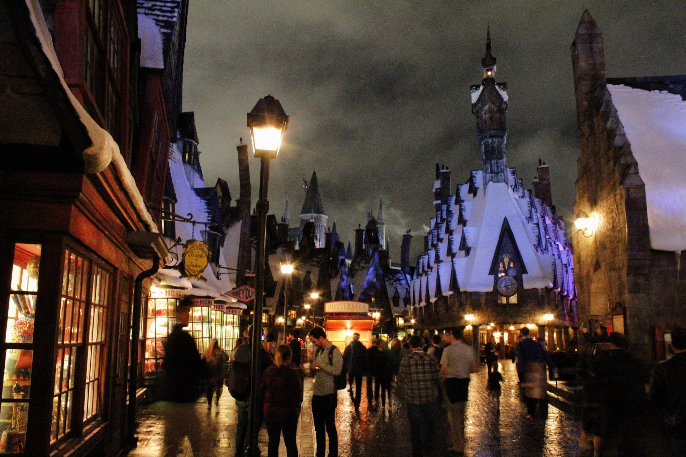

Last week I spent four amazing days in Orlando at the first ever rstudio::conf. I learned a ton, met some really cool people, connected with several I hadn’t seen in a while, and came out feeling ready to take on the world.
I’ve divided my summary of the conference into two parts. This first one shares my personal experience and some more general learnings, while the other one has quick, bullet-pointed lists on writing functions, packages, tools, and functions I learned, and general tips and tricks. I also learned a lot about writing packages on the second day of Hadley’s Master R Developer workshop, which will be included in a future post on writing my first package.
You can find most of the slides from the conference here, organized by Karl Broman (who was greatly missed), and videos of all the talks here.
Diversity and Inclusion in R
First, I want to thank RStudio for providing the diversity scholarship that enabled me to attend the conference at all. When I applied for the scholarship, I was just finishing up Metis and was still months away from joining my current company, Etsy. Without a company to pay for my ticket and not knowing when I would start earning a salary again, I could not have covered the $1000+ for the conference ticket and travel, and certainly not the training day ticket.
The availability of rstudio::conf diversity scholarships for women, LGBT+, and underrepresented minorities reflects the broader inclusion efforts I’ve seen in the R community. We have the newly-rebranded R Forwards taskforce, which changed their name from the R Foundation Task Force on Women so that they could “consider the needs of other marginalised groups as part of our mission.” There is also the R-Ladies organization, which has meet-up groups all around the world. UseR!, one of the main R conferences, is providing childcare options this year to make it easier for primary caregivers to attend. Overall, members of the R community seem aware of diversity issues and supportive of efforts to make the community more inclusive. That being said, there’s always more work to be done, as emphasized in this report on the demographics of the useR! attendees. I hope to do some of my part for these efforts by giving at least one R tutorial for the R-Ladies New York group this spring.
I met many kick-ass R Ladies at the conference, including Jenny Bryan, Charlotte Wickham, Hilary Parker, and these awesome graduate students from Vanderbuilt:
Coming at you strong from @RLadiesNash - excited to kickoff #rstudioconf pic.twitter.com/1DuGzx1w3h
— Lucy (@LucyStats) January 13, 2017
One person I was especially excited to meet was Julia Silge, who works with my brother Dave at StackOverflow. I’d been following her on Twitter and reading her blog for a while, but we had never met in person. In fact, this conference was only the second time she met Dave in person, even though he hired her as the second Data Scientist at Stack Overflow and developed the tidy text package with her!
@hspter @robinson_es @jaredlander A delight to meet you all in person, and @drob now for a GRAND TOTAL TWO TIMES.
— Julia Silge (@juliasilge) January 15, 2017
Julia only started using R about a year and a half ago, but she already has a great and active blog, a popular package, and a new career as a Data Scientist. While her strong previous scientific training (including an Astronomy PhD) certainly helped her, she’s a great example of how you can transition into data science later in your career without necessarily having a statistics or computer science degree.
Training Days
There were three training day workshops available: Master R Developer with Hadley Wickham, Intermediate Shiny with Joe Cheng, and Master the Tidyverse with Garrett Grolemund. I was already familiar with most of the material in the Tidyverse workshop, and while I definitely want to learn more Shiny, I decided to take the Master R Developer workshop. I’ve been meaning to learn more about making packages, the focus of the second day, and I always enjoy getting the chance to learn from Hadley again:
Great to be learning again in-person, six years later, from my first stats professor @hadleywickham pic.twitter.com/AttTrTaOFm
— Emily Robinson (@robinson_es) September 13, 2016
There were about 70 people in the Master R Developer workshop. Hadley ran a fairly interactive workshop, with lots of exercises to work on by yourself or with your neighbor. This was a great way to try out what you’d just learn, figure out what you didn’t understand, and get help from the couple of TAs if needed.
The first day had some material I’d already heard in Hadley’s meetups, but it’s always helpful to get a refresher. Other material, such as information on Object-Oriented Programming and S3 classes, was new. The second day on packages was entirely new to me and a great way to help overcome inertia and finally start writing my own packages.
Much of the information Hadley covered is available in two of his free online books, Advanced R and R Packages. But I personally prefer learning programming from a lecture and interactive exercises to reading a book, and going to the training days also forced me to work on the material and allowed you to ask questions (and learn from others’ questions). Hadley also made some off-the-cuff remarks that, because of his long experience with R, were very helpful. Finally, the workshop was just plain enjoyable, and a great way to spend two days.
Main Conference
Outside of the two keynotes and closing panel, the conference had two parallel tracks of talks. This meant I couldn’t get to them all, although I plan to watch a few I missed once the videos are uploaded.
It was a great, diverse line-up of speakers; some of my favorite talks were Hilary’s talk on Opinionated Analysis Development, Bob Rudis’ on Writing Readable Code with Pipes, Jenny Bryan’s on List-Columns, Julia Silge’s on Text Mining, the Tidy Way, and Jonathan McPherson’s on R Notebook Workflow. If you’re interested, I would suggest watching the videos rather than just reading the slides so you can get the full impact; each talk is only about 20 minutes. I picked up a lot of technical tips and tricks from the content of the talks (see my other post for these), but I could always have watched these later online. What I couldn’t have gotten is a full immersion into the R community.
To me, getting to meet and talk with new people and non-New York friends was one of the best parts of the conference. At lunch one day I met James, a Columbia professor, and we realized we were on the same flight back to New York. He asked how I was getting to the airport, and I told him I was sharing a cab with my brother, whose work was paying for the ride (Thanks Stack Overflow!), and asked if he wanted to join us.
He and Dave quickly hit it off, with my brother noticing that James seemed to know a lot about one of Dave’s packages, gganimate. About halfway through the ride, James said, “Yeah, a couple months ago I used it to animate NBA plays.” At which point, Dave asked, “Your last name is Curley, isn’t it?” It turns out Dave had been following James on twitter for a while and had meant to find him at the conference, but hadn’t made the connection. They spent the next few hours as we waited for our delayed flight in animated discussion while I enjoyed playing Super Mario Run.
Harry Potter World
I’d be remiss if I didn’t mention the amazing night at Harry Potter world, where we had all of Hogsmeade to ourselves, as RStudio had rented out the park for the evening. Hilary Parker took some beautiful pictures on her DSLR that captured the mood:

It was a bit bizarre to go on a roller coaster that had more staff members than riders, but I definitely didn’t miss the lines. I was even picked to get a free wand from Ollivander’s (Vine with Unicorn hair), which you can use to interact with shop windows in the park. But again, whether exploring Hogwarts, enjoying a butter beer, or grabbing the front row of a ride, the experience was made all the richer for the people I got to enjoy it with:
Wrap-Up
For those considering going to rstudio::conf next year, I hope this gave you a better idea of what the experience was like. I want to emphasize again how friendly everyone at this conference was, even prominent and notable members of the community. If you’re new to conferences, don’t be shy about introducing yourself after talks or at the lunch table.
In the final panel of Hadley Wickham, J.J. Allaire, and Joe Cheng, one of them said: “the strength of R is in the human factors. It’s possible for those who don’t have a conventional software background to be successful with R.” The R language maintainers, RStudio, and the many open-source package developers deserve much of the credit for this. But I think the final piece of really making R accessible is the rest of the great and friendly community. Whether it’s Stack Overflow power-users who enable you to find the answer when you Google questions, or the active bloggers who walk you through their code and analysis, or the Twitter users who share the newest packages and their insights, there are always people ready to help.